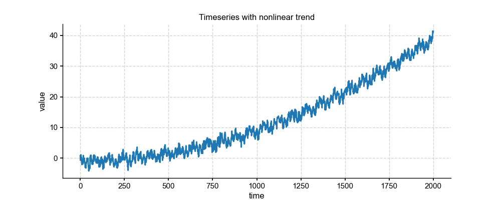

Series.detrend (pyleoclim.core.ui.Series.detrend)¶
-
pyleoclim.core.ui.Series.detrend(self, method='emd', **kwargs)¶ Detrend Series object
- Parameters
method (str, optional) –
The method for detrending. The default is ‘emd’. Options include:
linear: the result of a linear least-squares fit to y is subtracted from y.
constant: only the mean of data is subtrated.
”savitzky-golay”, y is filtered using the Savitzky-Golay filters and the resulting filtered series is subtracted from y.
”emd” (default): Empirical mode decomposition. The last mode is assumed to be the trend and removed from the series
**kwargs (dict) – Relevant arguments for each of the methods.
- Returns
new – Detrended Series object
- Return type
pyleoclim.Series
See also
pyleoclim.utils.tsutils.detrend()detrending wrapper functions
Examples
We will generate a random signal and use the different detrending functions
In [1]: import pyleoclim as pyleo In [2]: import numpy as np In [3]: from matplotlib import pyplot as plt # Generate a mixed signal with known frequencies In [4]: freqs=[1/20,1/80] In [5]: time=np.arange(2001) In [6]: signals=[] In [7]: for freq in freqs: ...: signals.append(np.cos(2*np.pi*freq*time)) ...: In [8]: signal=sum(signals) # Add a non-linear trend In [9]: slope = 1e-5 In [10]: intercept = -1 In [11]: nonlinear_trend = slope*time**2 + intercept In [12]: signal_trend = signal + nonlinear_trend #Add white noise In [13]: sig_var = np.var(signal) In [14]: noise_var = sig_var / 2 #signal is twice the size of noise In [15]: white_noise = np.random.normal(0, np.sqrt(noise_var), size=np.size(signal)) In [16]: signal_noise = signal_trend + white_noise #Create a series object In [17]: ts=pyleo.Series(time=time,value=signal_noise) In [18]: fig,ax = ts.plot(title='Timeseries with nonlinear trend') <Figure size 1000x400 with 1 Axes> In [19]: plt.close(fig) #Standardize In [20]: ts_std=ts.standardize() #Detrend using EMD In [21]: ts_emd = ts_std.detrend() In [22]: fig,ax=ts_emd.plot(title='Detrended with EMD method') <Figure size 1000x400 with 1 Axes> In [23]: plt.close(fig) #Detrend using Savitzky-Golay filter In [24]: ts_sg = ts_std.detrend(method='savitzky-golay') In [25]: fig,ax=ts_sg.plot(title='Detrended with Savitzky-Golay filter') <Figure size 1000x400 with 1 Axes> In [26]: plt.close(fig)